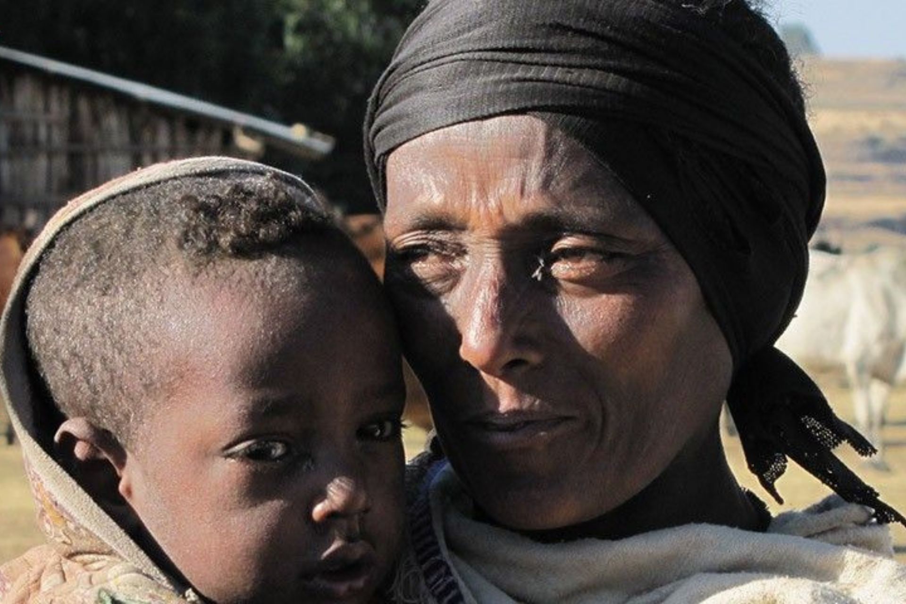
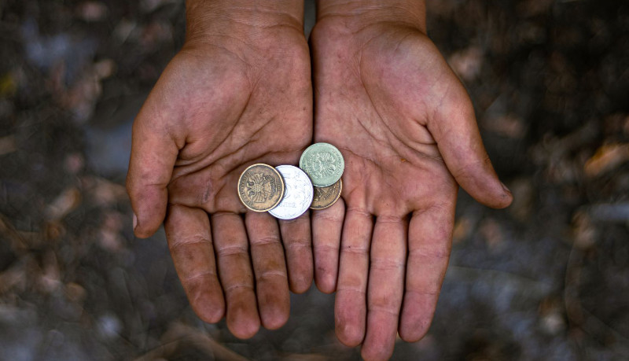
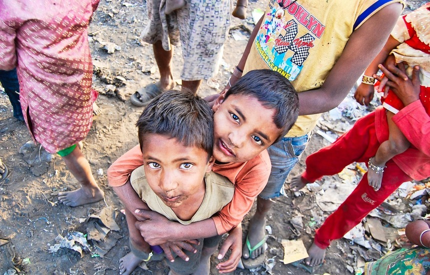
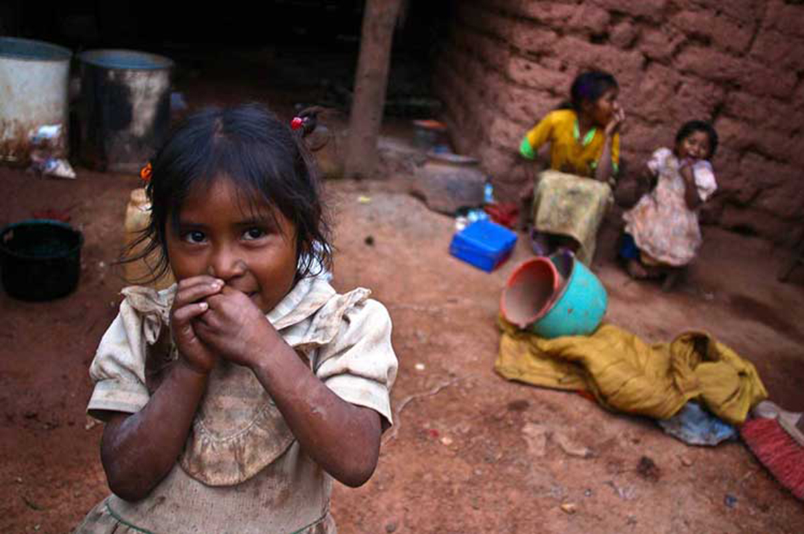
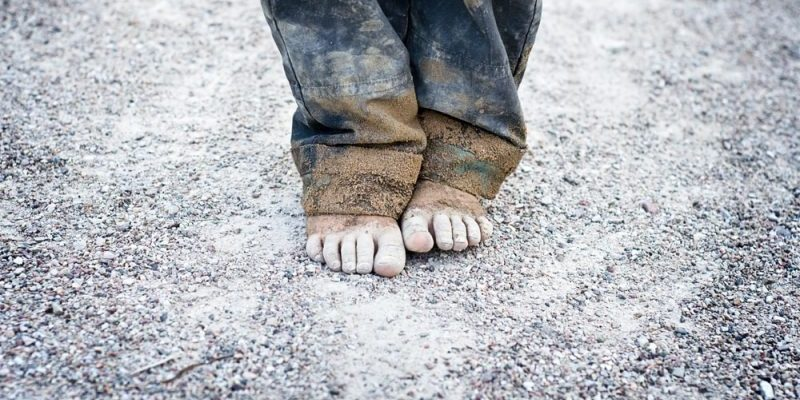

¿Por qué hay tanta pobreza?
PREGUNTAS
La pobreza tiene muchas dimensiones, pero entre sus causas se encuentran el desempleo, la exclusión social y la alta vulnerabilidad de ciertas poblaciones ante desastres, enfermedades y otros fenómenos que les impiden ser productivas.
VER MÁS

¿Por qué debo preocuparme por la situación económica de otras personas?
PREGUNTAS
La creciente desigualdad es perjudicial para el crecimiento económico y socava la cohesión social, aumentando las tensiones políticas y sociales y, en algunas circunstancias, provoca inestabilidad y conflictos.
VER MÁS

¿Por qué es tan importante la protección social?
PREGUNTAS
La pandemia de la COVID-19 tuvo consecuencias económicas tanto inmediatas como a largo plazo para personas de todo el mundo y, a pesar de la expansión de la protección social durante la crisis de la COVID-19.
VER MÁS

¿Qué puedo hacer al respecto?
Tu participación activa en la formulación de políticas puede contribuir a mejorar la situación a la hora de abordar la pobreza. Garantiza que se promuevan los derechos de las personas que la sufren y que se escuche su voz, que se comparta el conocimiento intergeneracional.
VER MÁS

¿Por qué aumentó la cifra mundial de personas en situación de pobreza?
La ratio de la pobreza per cápita a nivel mundial, de 2,15 dólares, se corrige ligeramente al alza en 0,1 puntos porcentuales hasta el 8,5 por ciento, lo que da como resultado la corrección de 648 a 659 millones de la cifra de personas en situación de pobreza (Banco Mundial (EN))
VER MÁS